1.4 模型训练的核心流程¶
模型训练是一个通过使用与模型最终应用场景紧密相关的 样本任务数据集 【训练集】，来“教导”机器学习模型以提升【优化】其性能的关键过程。当训练数据与模型在实际应用中需要处理的问题高度契合时，模型便能深入学习数据中的内在模式和相关性。这种深入学习使得经过充分训练的模型在面对新数据时【模型预测】，能够展现出卓越的预测准确性，从而有效应对实际挑战。
模型训练的主要流程一般包括以下步骤：
1. 数据准备
torch.utils.data.Dataset ：存储数据样本及其对应的标签
torch.utils.data.Dataloader ：包装了一个可迭代对象
2. 模型选择
torch.nn ：构建不同的模型
3. 利用数据训练模型
- 3.1 计算损失
CrossEntropyLoss ：定义损失函数
- 3.2 优化参数（模型学习/训练过程）
Torch.optim ：提供了各种优化方法
- 3.3 模型评估
autograd：自动梯度计算。
- 3.4 模型保存
torch.save ：保存模型参数
4. 拟合状态
5.模型预测
接下来，我们按照上述流程来对模型训练的整个流程进行详细的讲述。
1.数据准备¶
在深度学习中，模型从数据中进行学习，数据定义了模型的知识边界，决定了模型的性能上限，所以数据在深度学习中的决定性作用。
1.1 数据的组成要素¶
波士顿房价预测任务根据房屋的各项特征，预测该房屋的中位价格。数据来源于20世纪70年代波士顿周边地区的房屋数据。
| 数据组成 | 说明 | 示例（波士顿房价） | 特征描述 |
|---|---|---|---|
| 特征 | 模型的输入数据 | 犯罪率、房间数、学区评分等 | 结构化数据或文本数据 |
| 标签/目标值 | 模型输出结果 | 房屋价格（单位：千美元） | 目标值 |
| 样本 | 包含特征和标签的完整数据记录 | 一条完整的房屋信息记录 | 数据的基本单元 |
以波士顿房价预测数据集为例：
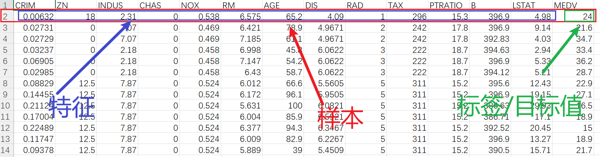
样本数量： 506条
特征：共有13个，如下表所示：
| 特征名 | 全称 | 中文解释 | 说明 |
|---|---|---|---|
| CRIM | Crime Rate | 城镇人均犯罪率 | 数值越大，治安越差 |
| ZN | Zoning | 住宅用地比例 | 数值越大，大型住宅区越多 |
| INDUS | Industry | 非零售业务用地比例 | 数值越大，工业/商业区越多 |
| CHAS | Charles River | 查尔斯河虚拟变量 | 1=临河，0=不临河 (景观因素) |
| NOX | Nitric Oxides | 一氧化氮浓度 | 数值越大，空气质量越差 |
| RM | Rooms | 每套住宅的平均房间数 | 核心特征，通常与房价正相关 |
| AGE | Age | 1940年前建造的房屋比例 | 数值越大，社区越老旧 |
| DIS | Distance | 到波士顿就业中心的距离 | 数值越大，离市中心越远 |
| RAD | Highway Access | 径向公路可达性指数 | 数值越大，交通越便利 |
| TAX | Tax | 每万美元的全额财产税 | 数值越大，税负越高 |
| PTRATIO | Pupil-Teacher Ratio | 城镇师生比例 | 数值越大，教育资源越紧张 |
| B | Black Proportion | 黑人比例指数 | 用于反映当时的社会经济状况 |
| LSTAT | Lower Status | 人口中低收入阶层百分比 | 核心特征，通常与房价负相关 |
目标变量：
| 名字 | 全称 | 中文解释 | 全称 |
|---|---|---|---|
| MEDV | Median Value | 房屋的中位价格 | 目标值，单位：千美元 |
1.2 数据划分¶
数据集划分通过合理分配数据至训练、验证和测试集，以支持模型有效训练、优化参数、评估性能并确保泛化能力。
| 数据集类型 | 主要用途 | 占比 | 理解 |
|---|---|---|---|
| 训练集 | 模型学习的数据，用于训练模型参数 | 60-80% | 教科书与课堂练习 |
| 验证集 | 验证模型效果，选择最佳模型 | 10-20% | 模拟考试与作业 |
| 测试集 | 最终评估模型性能 | 10-20% | 最终高考 |
假设我们将波士顿房价数据集进行划分：
- 训练集 (70%)：354条数据 → 用于训练模型学习房价与各种特征（房间数、犯罪率等）的关系。
- 验证集 (15%)：76条数据 → 用于验证模型效果。
- 测试集 (15%)：76条数据 → 最终评估模型效果。
注意： 实际工作中，由于数据量不足，数据集划分为训练集（80%）和测试集（20%）
1.3 pytorch中的数据表示¶
对于任何人工智能模型，即使是用于表面上非数字信息（如声音或图像）的算法，数据也必须以数字形式表征。PyTorch 则通过张量实现数据表征，张量是pytorch计算的数据的基本单位。
import torch
import numpy as np # pip install numpy
张量是一个多维数字数组：
- 标量是一种零维张量，包含一个数字。
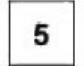
data_tensor =torch.tensor(5)
print(data_tensor)
- 向量是一种一维张量，包含多个相同类型的标量。
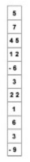
data_tensor = torch.tensor([5,7,4.5,12,-6])
print(data_tensor)
- 矩阵是一种二维张量，包含多个相同类型的向量。
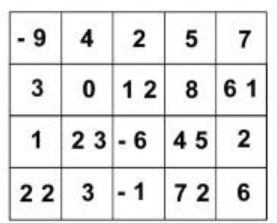
data_np = np.random.randn(3, 5)
data_tensor= torch.tensor(data_np)
print(data_tensor)
- 具有三个或更多维度的张量统称为 N 维张量。
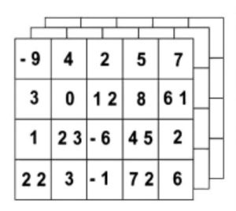
data_np = np.random.randn(3, 5, 3)
data_tensor= torch.tensor(data_np)
print(data_tensor)
如果我们将上述三维张量表示为：
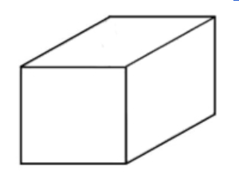
那四维张量就是：
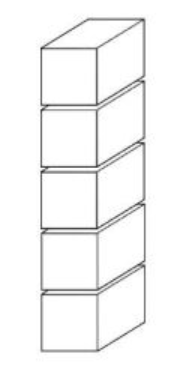
data_np = np.random.randn(5,3, 5, 3)
data_tensor= torch.tensor(data_np)
print(data_tensor)
更高维的张量可以通过低维张量拼接而成，
PyTorch 张量的可以在GPU上运行。GPU 的计算速度比 CPU 快得多，深度学习常见的海量数据和并行处理，这是一个主要优势。
使用训练深度学习模型所需的大型数据集可能非常复杂且计算要求较高。PyTorch 提供两种数据处理的方法：数据集和数据加载器，以方便数据加载并使代码更易于阅读。
- torch.utils.data.Dataset 存储数据特征及对应标签
- torch.utils.data.Dataloader 在数据集周围包装了一个可迭代对象（可以对其进行操作的对象），以便轻松访问样本
这两个内容到后续的课程中进行详细的说明。
1.4 文本预处理¶
文本数据的形式如下所示：
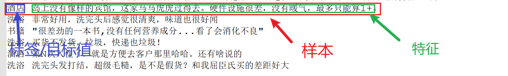
要处理文本数据的话，也需要将其转换为数字形式。处理方式：分词->构建词表 后再转换为词向量。
1.4.1 分词¶
分词就是将连续的字序列按照一定的规范重新组合成词序列的过程。在英文的行文中，单词之间是以空格作为自然分界符的，而中文只是字、句和段能通过明显的分界符来简单划界，唯独词没有一个形式上的分界符。分词过程就是找到这样分界符的过程。
例如：
传智教育是一家上市公司，旗下有黑马程序员品牌。我是在黑马这里学习人工智能
['传智', '教育', '是', '一家', '上市公司', '，', '旗下', '有', '黑马', '程序员', '品牌', '。', '我', '是', '在', '黑马', '这里', '学习', '人工智能']
Jieba（"结巴"）是一个开源的Python中文分词工具包，安装方法：
pip install jieba -i https://pypi.mirrors.ustc.edu.cn/simple/
使用方法：
import jieba
content = "传智教育是一家上市公司，旗下有黑马程序员品牌。我是在黑马这里学习人工智能"
# 使用jieba.lcut即可
word_list = jieba.lcut(sentence=content)
['传智', '教育', '是', '一家', '上市公司', '，', '旗下', '有', '黑马', '程序员', '品牌', '。', '我', '是', '在', '黑马', '这里', '学习', '人工智能']
1.4.2 词表构建¶
词表是一个将语言中的单词（或子词）映射到唯一整数ID的字典。计算机无法直接处理文本，必须将文本转换为数字形式。词表就是这个转换的“桥梁。
| 词语 | ID |
|---|---|
| 传智 | 0 |
| 教育 | 1 |
| 是 | 2 |
| 一家 | 3 |
| 上市公司 | 4 |
| ， | 5 |
... |
... |
构建词表的基本流程：
- 文本收集与加载：读取所有训练语料（数据集）。
- 文本预处理：分词。
- 统计词频：遍历所有分词后的文本，统计每个词出现的次数。
- 选择词汇：根据词频排序，选择前N个最常用的词。
- 生成映射字典：创建
word -> id和id -> word的映射。
import jieba
from collections import Counter
def build_vocabulary(texts, min_freq=0):
# 统计词频
word_freq = Counter()
# 遍历每一条样本
for text in texts:
# 分词
tokens = jieba.lcut(text)
# 统计词频
word_freq.update(tokens)
# 过滤低频词，构建词汇表
vocab = {word: idx for idx, (word, freq) in
enumerate( [item for item in word_freq.items() if item[1] >= min_freq])}
return vocab
if __name__ == '__main__':
# 训练语料中的数据
content = ["传智教育是一家上市公司，旗下有黑马程序员品牌。我是在黑马这里学习人工智能","传智教育是一家上市公司，旗下有黑马程序员品牌。我是在黑马这里学习人工智能"]
# 构建词表
vocab =build_vocabulary(content, min_freq=0)
print(vocab)
词表的结果为：
{'传智': 0, '教育': 1, '是': 2, '一家': 3, '上市公司': 4, '，': 5, '旗下': 6, '有': 7, '黑马': 8, '程序员': 9, '品牌': 10, '。': 11, '我': 12, '在': 13, '这里': 14, '学习': 15, '人工智能': 16}
1.5 词向量¶
词向量是将文本中的词语或字符映射到实数向量空间的技术，通过一个向量来表示一个词。从而将人类可读的文本转换为机器可理解的数值形式，为深度学习模型提供输入。
1.5.1 one-hot编码¶
One-Hot编码是一种将词语表示为二进制向量的方法，其中：
- 向量的长度等于词汇表的大小
- 每个词对应向量中的一个特定位置
- 对于给定的词，其对应位置为1，其他所有位置为0
import numpy as np
# 定义词汇表
vocab = {
'<UNK>': 0,
'教育': 1,
'猫': 2,
'狗': 3,
'鱼': 4,
'鸟': 5,
'跑': 6,
'游泳': 7,
'传智': 8
}
def one_hot_encoding(word, vocab):
"""One-Hot编码"""
vector = np.zeros(len(vocab))
if word in vocab:
vector[vocab[word]] = 1
else:
vector[vocab['<UNK>']] = 1
return vector
# 测试编码
test_words = ['猫', '狗', '鱼', '传智']
print("词汇表:", vocab)
print("\nOne-Hot编码结果:")
for word in test_words:
encoding = one_hot_encoding(word, vocab)
print(f"'{word}': {encoding} ")
one-hot编码的基本特点：
| 特性 | 描述 |
|---|---|
| 稀疏性 | 向量中大部分元素为0，只有一个元素为1 |
| 高维度 | 向量维度等于词汇表大小，通常很高 |
| 唯一性 | 每个词都有唯一的向量表示 |
缺点：高维稀疏向量，计算效率低，无法捕捉词之间的语义相似性。而且在大语料集下，每个向量的长度过大，占据大量内存。
1.5.2 词嵌入¶
nn.Embedding 是 PyTorch 中专门用于词嵌入的模块，它将离散的单词索引映射到连续的稠密向量。
import torch
import torch.nn as nn
# 词表
vocab = {
'<PAD>': 0, '<UNK>': 1,
'猫': 2, '狗': 3, '老虎': 4, '狮子': 5, # 动物
'苹果': 6, '香蕉': 7, '橙子': 8, '葡萄': 9, # 水果
'跑': 10, '跳': 11, '走': 12, '游泳': 13 # 动作
}
# 词嵌入
embedding = nn.Embedding(len(vocab), 20)
words = ['猫', '狗', '老虎', '狮子', '苹果', '香蕉', '跑', '跳']
# 获取词的索引
indices = []
for word in words:
if word in vocab:
indices.append(vocab[word])
# 获取词向量
indices_tensor = torch.tensor(indices)
print(indices_tensor) # tensor([ 2, 3, 4, 5, 6, 7, 10, 11])
word_vectors = embedding(indices_tensor).detach().numpy()
print(word_vectors.shape) # (8, 20)
词嵌入向量的可视化:
import matplotlib
matplotlib.use('TKAgg')
import matplotlib.pyplot as plt
from sklearn.manifold import TSNE
from pylab import mpl
from torch import nn
import torch
# 设置显示中文字体，
# 设置font.sans-serif 或 font.family 均可
mpl.rcParams["font.sans-serif"] = ["Arial Unicode MS"] ## mac
plt.rcParams['font.family']=['Arial Unicode MS'] ## mac
mpl.rcParams["font.sans-serif"] = ["SimHei"] ## win
plt.rcParams['font.family']=['SimHei'] ## win
mpl.rcParams["axes.unicode_minus"] = False
# 词表
vocab = {
'<PAD>': 0, '<UNK>': 1,
'猫': 2, '狗': 3, '老虎': 4, '狮子': 5, # 动物
'苹果': 6, '香蕉': 7, '橙子': 8, '葡萄': 9, # 水果
'跑': 10, '跳': 11, '走': 12, '游泳': 13 # 动作
}
embedding = nn.Embedding(len(vocab), 20)
# 在实际应用中，这里应该是训练好的嵌入层
words = ['猫', '狗', '老虎', '狮子', '苹果', '香蕉', '跑', '跳']
# 获取词的索引
# 获取要可视化的词的索引
indices = []
labels = []
for word in vocab:
if word in vocab:
indices.append(vocab[word])
labels.append(word)
# 获取词向量
indices_tensor = torch.tensor(indices)
word_vectors = embedding(indices_tensor).detach().numpy()
# 使用t-SNE降维
tsne = TSNE(n_components=2, random_state=42, perplexity=min(5, len(indices) - 1))
vectors_2d = tsne.fit_transform(word_vectors)
# 绘图
plt.figure(figsize=(12, 8))
plt.scatter(vectors_2d[:, 0], vectors_2d[:, 1], alpha=0.7)
for i, label in enumerate(labels):
plt.annotate(label, (vectors_2d[i, 0], vectors_2d[i, 1]),
xytext=(5, 5), textcoords='offset points',
fontsize=12, alpha=0.8)
plt.title('词向量可视化 (t-SNE)')
plt.xlabel('t-SNE 维度 1')
plt.ylabel('t-SNE 维度 2')
plt.grid(True, alpha=0.3)
plt.tight_layout()
plt.show()
结果如下所示：
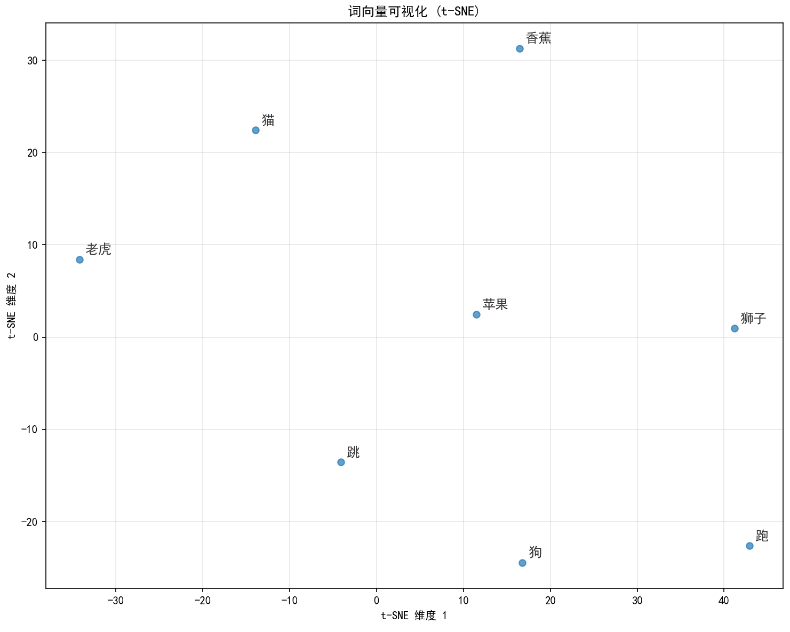
1.5.3【扩展】大模型中的词向量¶
在大模型中Tokenizer 来完成词嵌入的过程，他的核心目标是：将文本转换为模型可以处理的数据。
from transformers import AutoTokenizer
def demonstrate_tokenizer():
# 1. 加载分词器
tokenizer = AutoTokenizer.from_pretrained("bert-base-chinese")
# 2. 准备文本
texts = [
"自然语言处理很有趣",
"深度学习改变了AI",
"欢迎学习大模型技术"
]
for text in texts:
# 分词
tokens = tokenizer.tokenize(text)
# 编码
input_ids = tokenizer.encode(text)
# 解码
decoded_text = tokenizer.decode(input_ids)
print(f"\n原始文本: {text}")
print(f"分词结果: {tokens}")
print(f"输入ID: {input_ids}")
print(f"解码文本: {decoded_text}")
demonstrate_tokenizer()
输出结果为：
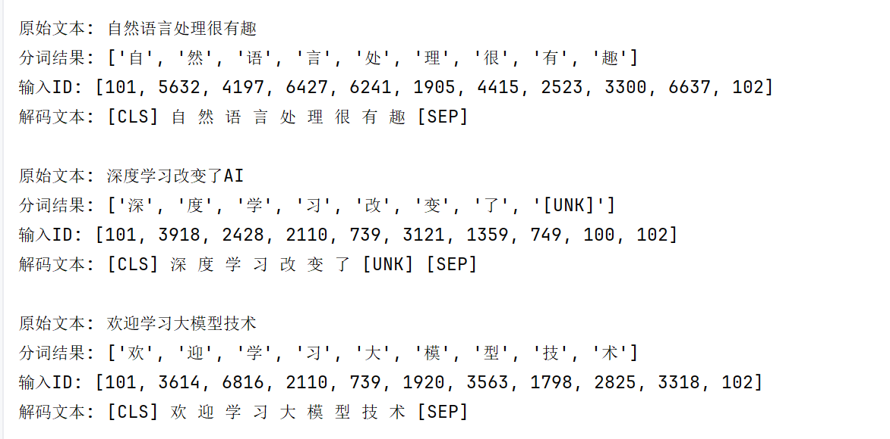
2. 模型选择¶
人工神经网络深度学习的核心模型架构，人工神经网络模仿生物神经网络结构和功能的计算模型
2.1 什么是神经网络¶
人工神经网络（ Artificial Neural Network， 简写为ANN）也简称为神经网络（NN），是一种模仿生物神经网络结构和功能的计算模型。人脑可以看做是一个生物神经网络，由众多的神经元连接而成。各个神经元传递复杂的电信号，树突接收到输入信号，然后对信号进行处理，通过轴突输出信号。下图是生物神经元示意图：

当电信号通过树突进入到细胞核时，会逐渐聚集电荷。达到一定的电位后，细胞就会被激活，通过轴突发出电信号。
那怎么构建人工神经网络中的神经元呢？

这个流程就像，来源不同树突(树突都会有不同的权重)的信息, 进行的加权计算, 输入到细胞中做加和，再通过激活函数输出细胞值。
接下来，我们使用多个神经元来构建神经网络，相邻层之间的神经元相互连接，并给每一个连接分配一个强度，如下图所示：
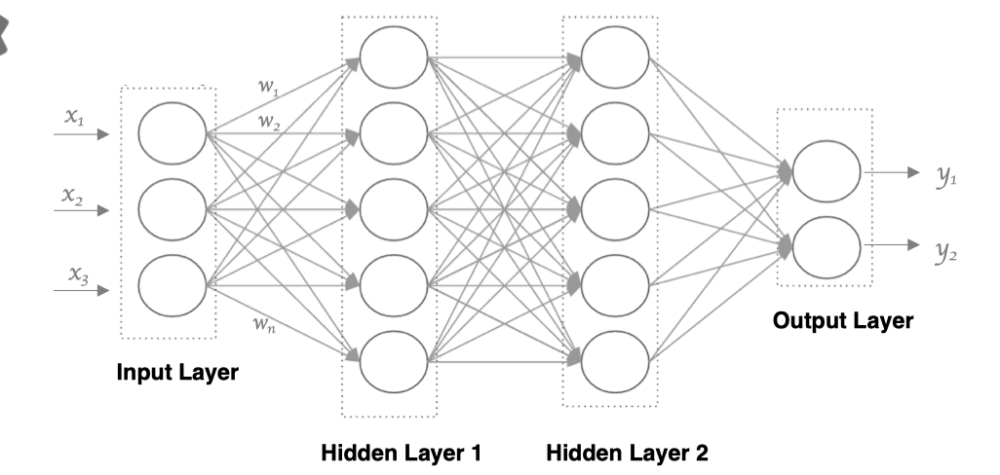
神经网络中信息只向一个方向移动，即从输入节点向前移动，通过隐藏节点，再向输出节点移动。其中的基本部分是:
- 输入层: 即输入 x 的那一层
- 输出层: 即输出 y 的那一层
- 隐藏层: 输入层和输出层之间都是隐藏层
特点是：
同一层的神经元之间没有连接。 第 N 层的每个神经元和第 N-1层 的所有神经元相连（这就是full connected的含义), 第N-1层神经元的输出就是第N层神经元的输入。每个连接都有一个权值。
2.2 激活函数¶
2.2.1 激活函数的作用¶
激活函数用于对每层的输出数据进行变换, 进而为整个网络结构结构注入了非线性因素。此时, 神经网络就可以拟合各种曲线。如果不使用激活函数，整个网络虽然看起来复杂，其本质还相当于一种线性模型，如下所示:


- 没有引入非线性因素的网络等价于使用一个线性模型来拟合
- 通过给网络输出增加激活函数, 实现引入非线性因素, 使得网络模型可以逼近任意函数, 提升网络对复杂问题的拟合能力.
另外通过图像可视化的形式理解：

我们发现增加激活函数之后, 神经网络的拟合能力更强。
2.2.2 常见的激活函数¶
激活函数主要用来向神经网络中加入非线性因素，以解决线性模型表达能力不足的问题，它对神经网络有着极其重要的作用。我们的网络参数在更新时，使用的反向传播算法（BP），这就要求我们的激活函数必须可微。
2.2.2.1 sigmoid 激活函数¶

sigmoid 激活函数的函数图像如下:
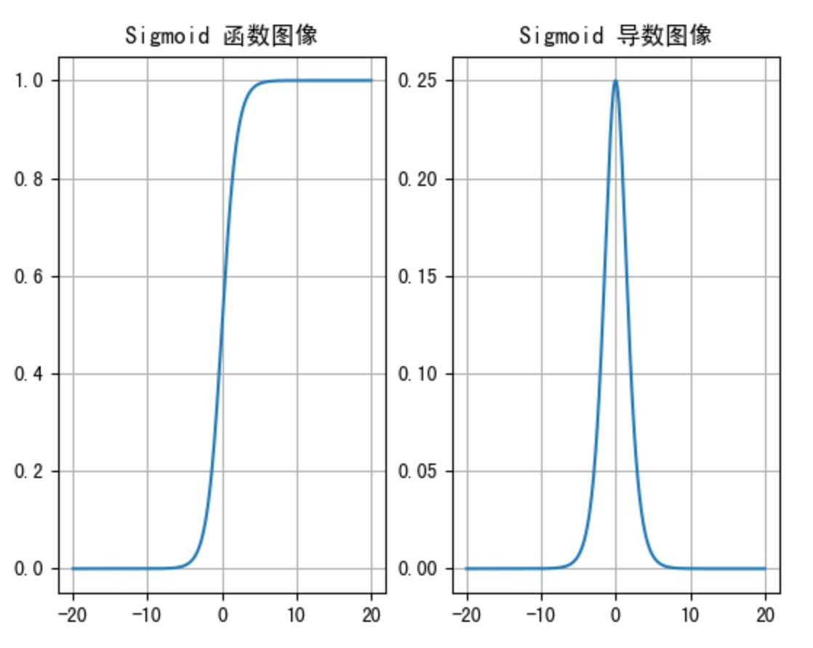
从 sigmoid 函数图像可以得到，sigmoid 函数可以将任意的输入映射到 (0, 1) 之间，当输入的值大致在 <-6 或者 >6 时，意味着输入任何值得到的激活值都是差不多的，这样会丢失部分的信息。比如：输入 100 和输出 10000 经过 sigmoid 的激活值几乎都是等于 1 的，但是输入的数据之间相差 100 倍的信息就丢失了。
对于 sigmoid 函数而言，输入值在 [-6, 6] 之间输出值才会有明显差异，输入值在 [-3, 3] 之间才会有比较好的效果。
通过上述导数图像，我们发现导数数值范围是 (0, 0.25)，当输入 <-6 或者 >6 时，sigmoid 激活函数图像的导数接近为 0，此时网络参数将更新极其缓慢，或者无法更新。
一般来说， sigmoid 网络在 5 层之内就会产生梯度消失现象。而且，该激活函数并不是以 0 为中心的，所以在实践中这种激活函数使用的很少。sigmoid函数一般只用于二分类的输出层。
在 PyTorch 中使用 sigmoid 函数的示例代码如下:
import torch
import torch.nn as nn
import matplotlib
matplotlib.use('TkAgg')
import matplotlib.pyplot as plt
# sigmoid
x = torch.linspace(-20, 20, 1000)
# 实例化
sigmoid = nn.Sigmoid()
plt.plot(x, sigmoid(x))
plt.grid()
plt.show()
# 导数
x = torch.linspace(-20, 20, 1000, requires_grad=True)
sigmoid(x).sum().backward()
plt.plot(x.detach(), x.grad)
plt.grid()
plt.show()
2.2.2.2 tanh 激活函数¶
Tanh 叫做双曲正切函数，其公式如下：

Tanh 的函数图像、导数图像如下：

由上面的函数图像可以看到，Tanh 函数将输入映射到 (-1, 1) 之间，图像以 0 为中心，在 0 点对称，当输入 大概<-3 或者 >3 时将被映射为 -1 或者 1。其导数值范围 (0, 1)，当输入的值大概 <-3 或者 > 3 时，其导数近似 0。
与 Sigmoid 相比，它是以 0 为中心的，使得其收敛速度要比 Sigmoid 快，减少迭代次数。然而，从图中可以看出，Tanh 两侧的导数也为 0，同样会造成梯度消失。
若使用时可在隐藏层使用tanh函数，在输出层使用sigmoid函数。
# tanh
x = torch.linspace(-20, 20, 1000)
tanh=nn.Tanh()
plt.plot(x, tanh(x))
plt.grid()
plt.show()
# 导数
x = torch.linspace(-20, 20, 1000, requires_grad=True)
tanh(x).sum().backward()
plt.plot(x.detach(), x.grad)
plt.grid()
plt.show()
2.2.2.3 ReLU 激活函数¶
ReLU 激活函数公式如下：
函数图像如下:
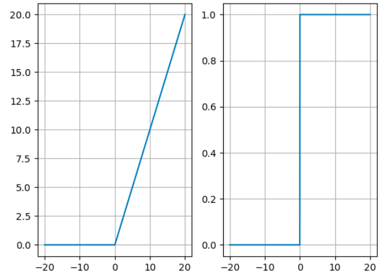
从上述函数图像可知，ReLU 激活函数将小于 0 的值映射为 0，而大于 0 的值则保持不变，它更加重视正信号，而忽略负信号，这种激活函数运算更为简单，能够提高模型的训练效率。
从图中可以看到，当x<0时，ReLU导数为0，而当x>0时，则不存在饱和问题。所以，ReLU 能够在x>0时保持梯度不衰减，从而缓解梯度消失问题。然而，随着训练的推进，部分输入会落入小于0区域，导致对应权重无法更新。这种现象被称为“神经元死亡”。
ReLU是目前最常用的激活函数。与sigmoid相比，RELU的优势是：
采用sigmoid函数，计算量大（指数运算），反向传播求误差梯度时，求导涉及除法，计算量相对大，而采用Relu激活函数，整个过程的计算量节省很多。 sigmoid函数反向传播时，很容易就会出现梯度消失的情况，从而无法完成深层网络的训练。 Relu会使一部分神经元的输出为0，这样就造成了网络的稀疏性，并且减少了参数的相互依存关系，缓解了过拟合问题的发生。
代码实现如下：
# relu
x = torch.linspace(-20, 20, 1000)
relu = nn.ReLU()
plt.plot(x, relu(x))
plt.grid()
plt.show()
# 导数
x = torch.linspace(-20, 20, 1000, requires_grad=True)
relu(x).sum().backward()
plt.plot(x.detach(), x.grad)
plt.grid()
plt.show()
2.2.2.4 Gelu激活函数¶
GELU（Gaussian Error Linear Unit）激活函数，在Transformer模型（如BERT, GPT）中取得了巨大成功，ReLU的一个平滑变体。GELU 已经成为现代深度学习，特别是自然语言处理领域的默认激活函数选择，它在保持ReLU优点的同时，提供了更好的平滑性和性能。
公式近似如下：
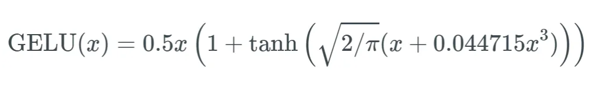
曲线如下所示：
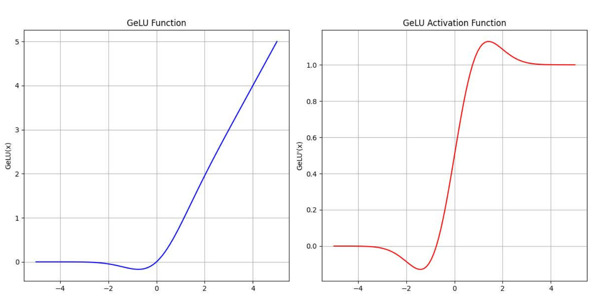
优点
- 相比于ReLU，GELU函数在临近原点时梯度不为零，减少了训练过程中梯度消失的问题；
- 导函数比较光滑，无间断情况，容易做反向传播；
- RELU计算复杂度较低，同时具有良好的性能，常用于大规模训练的任务，例如BERT、GPT等等。
代码实现如下：
# gelu
x = torch.linspace(-20, 20, 1000)
gelu = nn.GELU()
plt.plot(x, gelu(x))
plt.grid()
plt.show()
# 导数
x = torch.linspace(-20, 20, 1000, requires_grad=True)
gelu(x).sum().backward()
plt.plot(x.detach(), x.grad)
plt.grid()
plt.show()
2.2.2.5 SoftMax¶
softmax用于多分类过程中，它是二分类函数sigmoid在多分类上的推广，目的是将多分类的结果以概率的形式展现出来。
计算方法如下图所示：


Softmax 直白来说就是将网络输出的 logits 通过 softmax 函数，就映射成为(0,1)的值，而这些值的累和为1（满足概率的性质），那么我们将它理解成概率，选取概率最大（也就是值对应最大的）节点，作为我们的预测目标类别。
import torch
# logits
scores = torch.tensor([0.2, 0.02, 0.15, 0.15, 1.3, 0.5, 0.06, 1.1, 0.05, 3.75])
# softmax
softmax =nn.Softmax()
print(softmax(scores))
程序输出结果:
tensor([0.0212, 0.0177, 0.0202, 0.0202, 0.0638, 0.0287, 0.0185, 0.0522, 0.0183,
0.7392])
2.2.3 其他激活函数及激活函数的选择方法¶
除了上述的激活函数，还存在很多其他的激活函数，如下图所示:
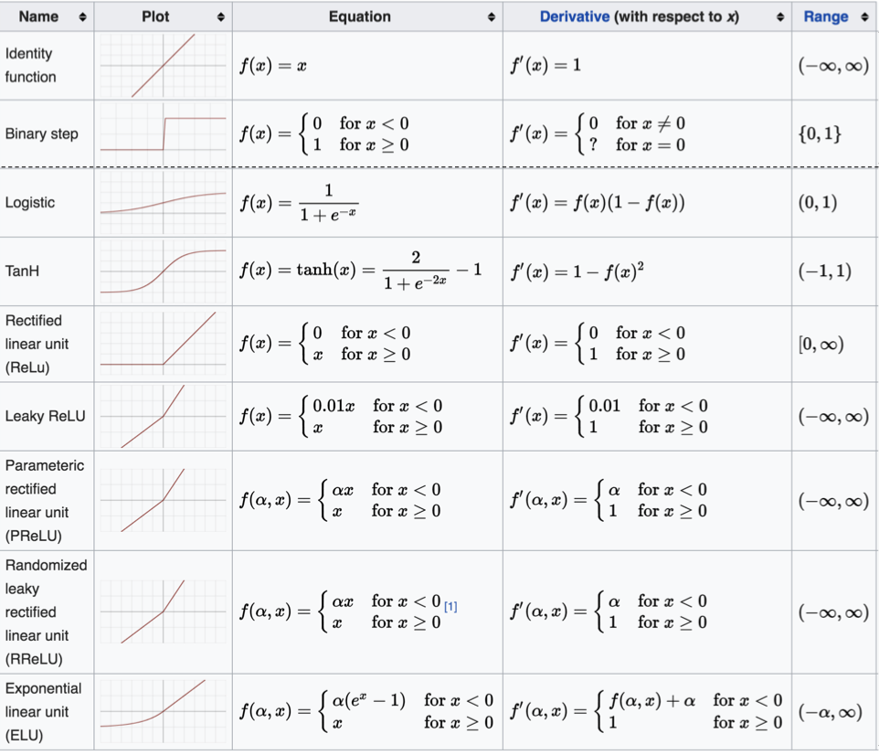
这么多激活函数, 我们应该如何选择呢?
对于隐藏层:
-
优先选择RELU激活函数
-
如果ReLu效果不好，那么尝试其他激活，如Leaky ReLu等。
-
如果你使用了Relu， 需要注意一下Dead Relu问题， 避免出现大的梯度从而导致过多的神经元死亡。
-
不要使用sigmoid激活函数，可以尝试使用tanh激活函数
对于输出层
-
二分类问题选择sigmoid激活函数
-
多分类问题选择softmax激活函数
-
回归问题选择identity激活函数
2.3 神经网络搭建和参数计算¶
2.3.1 构建简单神经网络¶
接下来我们来构建如下图所示的神经网络模型：

神经网络时输入层有输入数据决定，在构建神经网络时只需设计隐藏层和输出层即可。
PyTorch 使用模块作为深度学习模型的构建块，可以快速、直接地构建神经网络，而无需手动编码每个算法的繁琐工作。
在pytorch中定义深度神经网络其实就是一个层堆叠的过程，继承自nn.Module，实现两个方法：
__init__方法中定义网络中的层结构，主要是全连接层，并进行初始化forward方法，在实例化模型的时候，底层会自动调用该函数。该函数中为初始化定义的layer传入数据，并确定数据的流向等。
import torch
import torch.nn as nn
from torchsummary import summary
# 网络构建
class Model(nn.Module):
def __init__(self):
super(Model, self).__init__()
# 第一个隐藏层
self.linear1 = nn.Linear(3, 3)
# 第二个隐藏层
self.linear2 = nn.Linear(3 ,2)
# 输出层
self.out = nn.Linear(2, 2)
self.relu = nn.ReLU()
self.softmax = nn.Softmax(dim=1)
def forward(self, x):
# 数据经过第一个线性层
x = self.linear1(x)
x = self.relu(x)
# 数据经过第二个线性层
x = self.linear2(x)
x = self.relu(x)
# 数据经过输出层
x = self.out(x)
x =self.softmax(x)
# 返回最终的结果
return x
我们构建好网络结构后，就可以调用构建好的模型，如下所示：
if __name__ == "__main__":
# 实例化model对象
mymodel = Model()
# 随机产生数据
mydata = torch.randn(5, 3)
# 将数据送入网络中，获取输出结果
output = mymodel(mydata)
print('mydata.shape--->', mydata.shape)
print('output.shape--->', output.shape)
# 模型结构展示
summary(mymodel, input_size=(3,),batch_size=5)
输出结果为：
mydata.shape---> torch.Size([5, 3])
output.shape---> torch.Size([5, 2])
----------------------------------------------------------------
Layer (type) Output Shape Param #
================================================================
Linear-1 [5, 3] 12
Linear-2 [5, 2] 8
Linear-3 [5, 2] 6
================================================================
Total params: 26
Trainable params: 26
Non-trainable params: 0
----------------------------------------------------------------
Input size (MB): 0.00
Forward/backward pass size (MB): 0.00
Params size (MB): 0.00
Estimated Total Size (MB): 0.00
----------------------------------------------------------------
2.3.2 输入数据和输出数据分析¶
神经网络的输入数据是为[batch_size, in_features]的张量经过网络处理后获取了[batch_size, out_features]的输出张量。在上述例子中，batchsize=5, infeatures=3,out_features=2,结果如下所示：
mydata.shape---> torch.Size([5, 3])
output.shape---> torch.Size([5, 2])
2.3.3 模型参数分析¶
- 观察模型的参数
----------------------------------------------------------------
Layer (type) Output Shape Param #
================================================================
Linear-1 [5, 3] 12
Linear-2 [5, 2] 8
Linear-3 [5, 2] 6
================================================================
Total params: 26
Trainable params: 26
Non-trainable params: 0
----------------------------------------------------------------
Input size (MB): 0.00
Forward/backward pass size (MB): 0.00
Params size (MB): 0.00
Estimated Total Size (MB): 0.00
----------------------------------------------------------------
- 模型参数的计算
- 以第一个隐层为例：该隐层有3个神经元，每个神经元的参数为：4个（w1,w2,w3,b1），所以一共用3x4=12个参数。
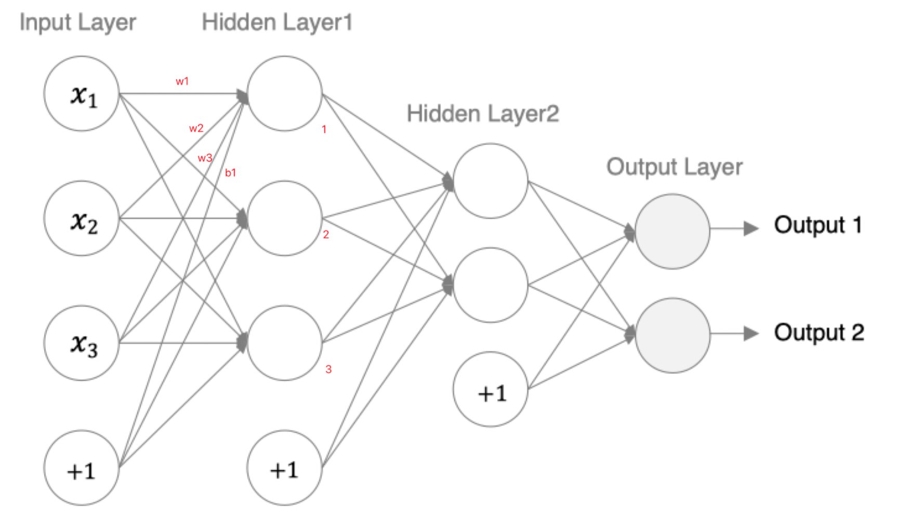
- 输入数据和网络权重是两个不同的事儿！对于初学者理解这一点十分重要，要分得清。
2.3.4 transformer模型¶
Transformer 的整体结构是一个编码器-解码器架构：
- 编码器：负责将输入序列（如一个句子）转换为一组富含上下文信息的特征。
- 解码器：根据编码器的输出和之前已生成的输出，自回归地生成目标序列。

1. 输入¶
在输入进入编码器之前，需要先进行以下处理：
- 词嵌入：将输入的每个词（Token）转换成一个向量。
- 位置编码：额外注入位置编码信息到输入嵌入中。位置编码是一个与词嵌入维度相同的向量，它使用正弦和余弦函数来为每个位置生成一个独特的“位置信号”。
2.编码器（AE模型）¶
编码器由 N 个（原论文中 N=6）完全相同的层堆叠而成。每一层都包含两个核心子层：
- 多头自注意力层：让输入序列中的每个词都能与其他所有词进行交互，捕捉远距离依赖关系。
- 前馈神经网络层：一个简单的全连接网络，对每个位置的表示进行独立变换（位置间参数共享）。
每个子层周围都有一个残差连接，后接层归一化。也就是说，每个子层的输出是 LayerNorm(x + Sublayer(x))。这使得深层网络更容易训练。
3. 解码器（AR模型）¶
解码器也由 N 个（原论文中 N=6）完全相同的层堆叠而成。每一层包含三个核心子层：
- 掩码多头自注意力层： 这是一个“掩码”的自注意力层。在训练时，为了确保模型在预测第 t 个位置时只能看到 t 之前的位置（而不能看到未来的信息），会使用一个掩码矩阵将未来位置的信息遮盖掉。
- 多头编码器-解码器注意力层： 这是连接编码器和解码器的桥梁。它的 Query 向量来自解码器上一层的输出，而 Key 和 Value 向量来自**编码器的最终输出**。这使得解码器在生成每一个词时，都能有选择地关注输入序列中最相关的部分。
- 前馈神经网络层： 与编码器中的相同。
同样，每个子层周围也都有残差连接和层归一化。
4. 输出¶
解码器的输出会通过一个线性层和一个 Softmax 层，转换为下一个词的概率分布。
5. Bert中模型架构¶
获取方式：
from transformers import AutoTokenizer,AutoModel
# 获取模型
model = AutoModel.from_pretrained('bert-base-chinese')
print(model)
结果为：
BertModel(
(embeddings): BertEmbeddings(
(word_embeddings): Embedding(21128, 768, padding_idx=0)
(position_embeddings): Embedding(512, 768)
(token_type_embeddings): Embedding(2, 768)
(LayerNorm): LayerNorm((768,), eps=1e-12, elementwise_affine=True)
(dropout): Dropout(p=0.1, inplace=False)
)
(encoder): BertEncoder(
(layer): ModuleList(
(0-11): 12 x BertLayer(
(attention): BertAttention(
(self): BertSdpaSelfAttention(
(query): Linear(in_features=768, out_features=768, bias=True)
(key): Linear(in_features=768, out_features=768, bias=True)
(value): Linear(in_features=768, out_features=768, bias=True)
(dropout): Dropout(p=0.1, inplace=False)
)
(output): BertSelfOutput(
(dense): Linear(in_features=768, out_features=768, bias=True)
(LayerNorm): LayerNorm((768,), eps=1e-12, elementwise_affine=True)
(dropout): Dropout(p=0.1, inplace=False)
)
)
(intermediate): BertIntermediate(
(dense): Linear(in_features=768, out_features=3072, bias=True)
(intermediate_act_fn): GELUActivation()
)
(output): BertOutput(
(dense): Linear(in_features=3072, out_features=768, bias=True)
(LayerNorm): LayerNorm((768,), eps=1e-12, elementwise_affine=True)
(dropout): Dropout(p=0.1, inplace=False)
)
)
)
)
(pooler): BertPooler(
(dense): Linear(in_features=768, out_features=768, bias=True)
(activation): Tanh()
)
)
3. 模型训练¶
模型从数据中学习规律的过程。
3.1 损失函数¶
在深度学习中, 损失函数是用来衡量模型参数的质量的函数, 衡量的方式是比较网络输出和真实输出的差异:
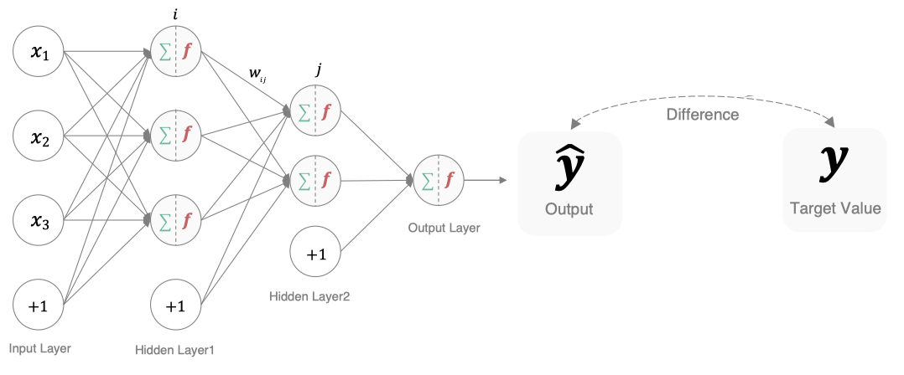
损失函数在不同的文献中名称是不一样的，主要有以下几种命名方式：

在深度学习的分类任务中使用最多的是交叉熵损失函数，所以在这里我们着重介绍这种损失函数。
3.1.1 交叉熵损失¶
在多分类任务通常使用softmax将logits转换为概率的形式，所以多分类的交叉熵损失也叫做softmax损失，它的计算方法是：
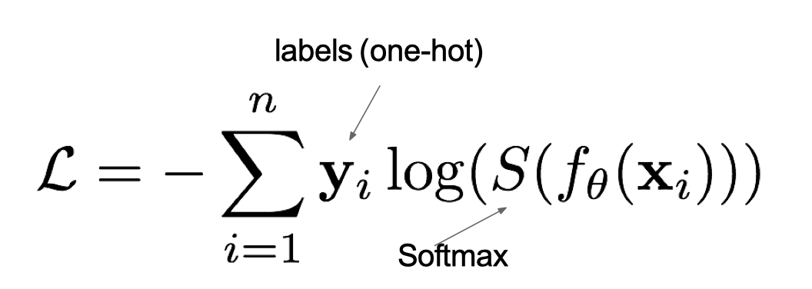
其中，y是样本x属于某一个类别的真实概率，而f(x)是样本属于某一类别的预测分数，S是softmax函数，L用来衡量p,q之间差异性的损失结果。
例子：
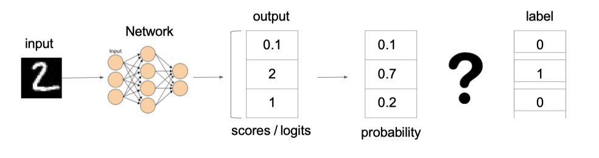
上图中的交叉熵损失为：
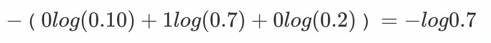
从概率角度理解，我们的目的是最小化正确类别所对应的预测概率的对数的负值，如下图所示：

在pytorch中使用nn.CrossEntropyLoss()实现，如下所示：
# 分类损失函数：交叉熵损失使用nn.CrossEntropyLoss()实现。nn.CrossEntropyLoss()=softmax + 损失计算
def test():
# 设置真实值: 可以是热编码后的结果也可以不进行热编码
# y_true = torch.tensor([[0, 1, 0], [0, 0, 1]], dtype=torch.float32)
# 注意的类型必须是64位整型数据
y_true = torch.tensor([1, 2], dtype=torch.int64)
y_pred = torch.tensor([[0.2, 0.6, 0.2], [0.1, 0.8, 0.1]], dtype=torch.float32)
# 实例化交叉熵损失
loss = nn.CrossEntropyLoss()
# 计算损失结果
my_loss = loss(y_pred, y_true).numpy()
print('loss:', my_loss)
if __name__ == "__main__":
test()
结果为：
loss: 1.1200755
3.1.2 二分类交叉熵¶
在处理二分类任务时，我们不在使用softmax激活函数，而是使用sigmoid激活函数，那损失函数也相应的进行调整，使用二分类的交叉熵损失函数：
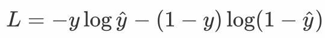
其中，y是样本x属于某一个类别的真实概率，而y^是样本属于某一类别的预测概率，L用来衡量真实值与预测值之间差异性的损失结果。
在pytorch中实现时使用nn.BCELoss() ，如下所示:
def test2():
# 1 设置真实值和预测值
# 预测值是sigmoid输出的结果
y_pred = torch.tensor([0.6901, 0.5459, 0.2469], requires_grad=True)
y_true = torch.tensor([0, 1, 0], dtype=torch.float32)
# 2 实例化二分类交叉熵损失
criterion = nn.BCELoss()
# 3 计算损失
my_loss = criterion(y_pred, y_true).detach().numpy()
print('loss：', my_loss)
if __name__ == "__main__":
test2()
结果为：
loss： 0.6867941
3.2 优化器¶
多层神经网络的拟合能力比单层网络强得多。想要训练多层网络，需要更强大的学习算法。误差反向传播算法（Back Propagation）是其中最杰出的代表，它是目前最成功的神经网络学习算法。现实任务使用神经网络时，都是在使用 BP 算法进行训练的。
3.2.1 梯度下降算法¶
梯度下降法简单来说就是一种寻找使损失函数最小化的方法。从数学上的角度来看，梯度的方向是函数增长速度最快的方向，那么梯度的反方向就是函数减少最快的方向，所以有：

其中，η是学习率，如果学习率太小，那么每次训练之后得到的效果都太小，增大训练的时间成本。如果，学习率太大，那就有可能直接跳过最优解，进入无限的训练中。解决的方法就是，学习率也需要随着训练的进行而变化。
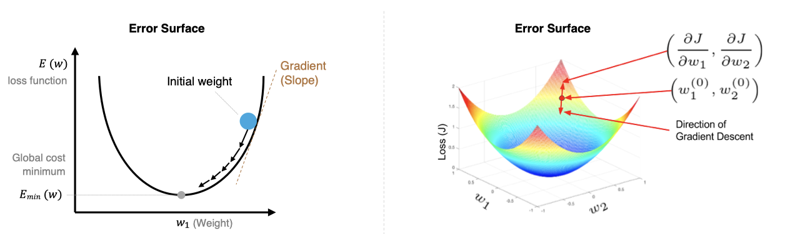
在上图中我们展示了一维和多维的损失函数，损失函数呈碗状。在训练过程中损失函数对权重的偏导数就是损失函数在该位置点的梯度。我们可以看到，沿着负梯度方向移动，就可以到达损失函数底部，从而使损失函数最小化。这种利用损失函数的梯度迭代地寻找局部最小值的过程就是梯度下降的过程。
3.2.2 反向传播(BP算法)¶
利用反向传播算法对神经网络进行训练。该方法与梯度下降算法相结合，对网络中所有权重计算损失函数的梯度，并利用梯度值来更新权值以最小化损失函数。
前向传播指的是数据输入的神经网络中，逐层向前传输，一直到运算到输出层为止。
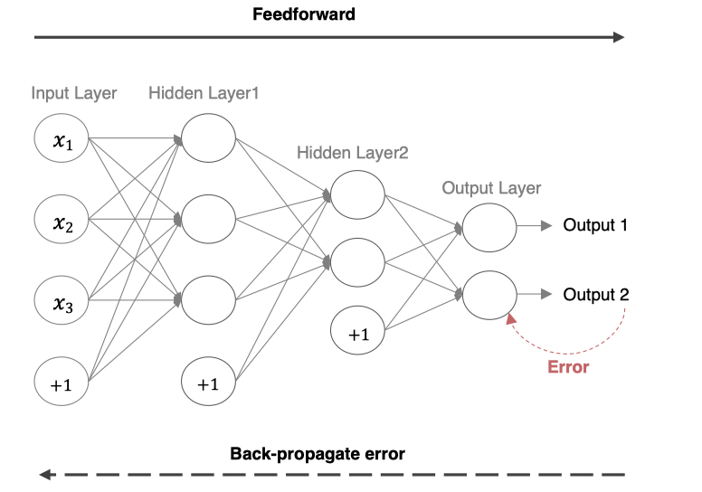
在网络的训练过程中经过前向传播后得到的最终结果跟训练样本的真实值总是存在一定误差，这个误差便是损失函数。想要减小这个误差，就用损失函数，从后往前，依次求各个参数的偏导，这就是反向传播（Back Propagation）。
import torch
def test():
# 1 初始化权重参数
w = torch.tensor([1.0], requires_grad=True)
y = ((w ** 2) / 2.0).sum()
# 2 实例化优化方法
optimizer = torch.optim.SGD([w], lr=0.01)
# 3 第1次更新 计算梯度，并对参数进行更新
optimizer.zero_grad()
y.backward()
optimizer.step()
print('第1次: 梯度w.grad: %f, 更新后的权重:%f' % (w.grad.numpy(), w.detach().numpy()))
# 4 第2次更新 计算梯度，并对参数进行更新
# 使用更新后的参数机选输出结果
y = ((w ** 2) / 2.0).sum()
optimizer.zero_grad()
y.backward()
optimizer.step()
print('第2次: 梯度w.grad: %f, 更新后的权重:%f' % (w.grad.numpy(), w.detach().numpy()))
if __name__ == "__main__":
test()
输出结果为：
第1次: 梯度w.grad: 1.000000, 更新后的权重:0.990000
第2次: 梯度w.grad: 0.990000, 更新后的权重:0.980100
3.2.3 梯度下降的优化方法¶
梯度下降优化算法中，可能会碰到以下情况：
- 碰到平缓区域，梯度值较小，参数优化变慢
- 碰到 “鞍点” ，梯度为 0，参数无法优化
- 碰到局部最小值

对于这些问题, 出现了一些对梯度下降算法的优化方法，例如：Momentum、AdaGrad、RMSprop、Adam 等.
3.2.3.1.指数移动加权平均¶
我们最常见的算数平均指的是将所有数加起来除以数的个数，每个数的权重是相同的。加权平均指的是给每个数赋予不同的权重求得平均数。移动平均数，指的是计算最近邻的 N 个数来获得平均数。
指数移动加权平均则是参考各数值，并且各数值的权重都不同，距离越远的数字对平均数计算的贡献就越小（权重较小），距离越近则对平均数的计算贡献就越大（权重越大）。
比如：明天气温怎么样，和今天气温有很大关系，而和一个月前的气温关系就小一些。
计算公式可以用下面的式子来表示：

- St 表示指数加权平均值;
- Yt 表示 t 时刻的值;
- β 调节权重系数，该值越大平均数越平缓。
我们接下来通过一段代码来看下结果，我们随机产生进 30 天的气温数据，来看下使用指数加权平均后的结果
import torch
import matplotlib.pyplot as plt
# 产生的数据
ELEMENT_NUMBER = 30
# 指数加权平均温度
def test(beta=0.9):
# 固定随机数种子
torch.manual_seed(0)
# 产生30天的随机温度
temperature = torch.randn(size=[ELEMENT_NUMBER, ]) * 10
print(temperature)
days = torch.arange(1, ELEMENT_NUMBER + 1, 1)
# 绘制原始数据温度曲线图和散点图
plt.plot(days, temperature, color='r')
plt.scatter(days, temperature)
plt.show()
# 用来存储指数移动加权平均后的结果
exp_weight_avg = []
# 遍历每一个温度，下标从1开始
for idx, temp in enumerate(temperature,1):
# 第一个元素的的 EWA 值等于自身
if idx == 1:
exp_weight_avg.append(temp)
continue
# 第二个元素的 EWA 值等于上一个 EWA 乘以 β + 当前气氛乘以 (1-β)
new_temp = exp_weight_avg[idx - 2] * beta + (1 - beta) * temp
exp_weight_avg.append(new_temp)
# 绘制指数加权平均后的结果
plt.plot(days, exp_weight_avg, color='r')
plt.scatter(days, temperature)
plt.show()
if __name__ == '__main__':
test(0.5)
test(0.9)
程序结果如下:
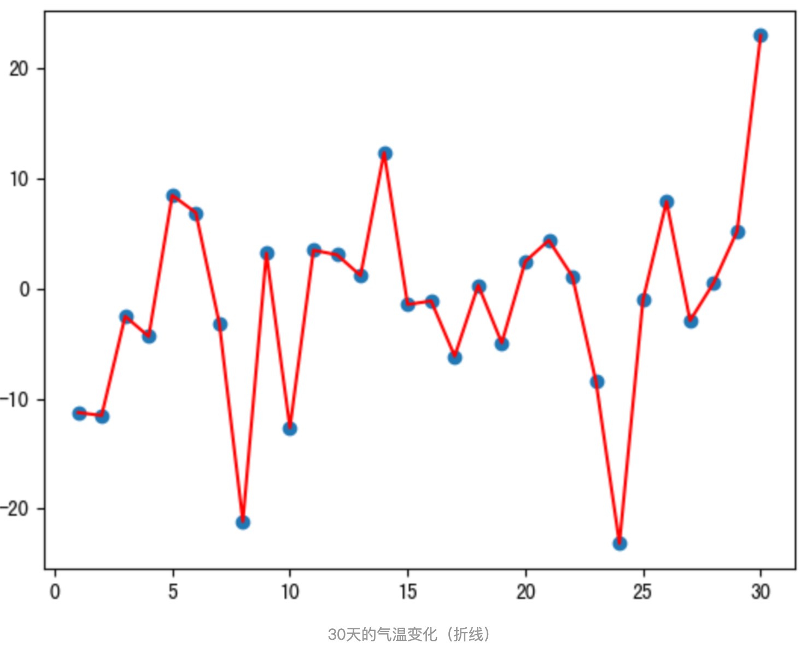


从程序运行结果可以看到：
指数加权移动平均绘制出的气氛变化曲线更加平缓;β 的值越大，则绘制出的折线越加平缓，波动越小。
3.2.3.2. Adam¶
Adam 使用：移动加权平均的梯度和移动加权平均的学习率。 1.修正梯度: 使⽤梯度 的 指数加权平均 2.修正学习率: 使⽤梯度平⽅ 的 指数加权平均
修正梯度的方法是 ：
通过指数加权平均法，累计历史梯度值，进行参数更新，越近的梯度值对当前参数更新的重要性越大。
梯度计算公式：Dt = β * St-1 + (1- β) * Dt
- St-1 表示历史梯度移动加权平均值
- wt 表示当前时刻的梯度值
- β 为权重系数
举个例子，假设：权重 β 为 0.9，例如：
第一次梯度值：s1 = d1 = w1 第二次梯度值：s2 = 0.9 * s1 + d2 * 0.1 第三次梯度值：s3 = 0.9 * s2 + d3 * 0.1 第四次梯度值：s4 = 0.9 * s3 + d4 * 0.1
- w 表示初始梯度
- d 表示当前轮数计算出的梯度值
- s 表示历史梯度值
梯度下降公式中梯度的计算，就不再是当前时刻 t 的梯度值，而是历史梯度值的指数移动加权平均值。公式修改为：

修正学习率的方法是 ：
使用指数移动加权平均梯度替换历史梯度的平方和。其计算过程如下：
- 初始化学习率 α、初始化参数 θ、小常数 σ = 1e-6
- 初始化参数 θ
- 初始化梯度累计变量 s
- 从训练集中采样 m 个样本的小批量，计算梯度 g
- 使用指数移动平均累积历史梯度，公式如下：
学习率 α 的计算公式如下：
参数更新公式如下：
在pytroch中，Adam梯度优化法编程实践如下：
def test():
# 1 初始化权重参数
w = torch.tensor([1.0], requires_grad=True)
y = ((w ** 2) / 2.0).sum()
# 2 实例化优化方法：Adam算法，其中betas是指数加权的系数
optimizer = torch.optim.Adam([w], lr=0.01,betas=[0.9,0.99])
# 3 第1次更新 计算梯度，并对参数进行更新
optimizer.zero_grad()
y.backward()
optimizer.step()
print('第1次: 梯度w.grad: %f, 更新后的权重:%f' % (w.grad.numpy(), w.detach().numpy()))
# 4 第2次更新 计算梯度，并对参数进行更新
# 使用更新后的参数机选输出结果
y = ((w ** 2) / 2.0).sum()
optimizer.zero_grad()
y.backward()
optimizer.step()
print('第2次: 梯度w.grad: %f, 更新后的权重:%f' % (w.grad.numpy(), w.detach().numpy()))
if __name__ == "__main__":
test()
结果显示：
第1次: 梯度w.grad: 1.000000, 更新后的权重:0.990000
第2次: 梯度w.grad: 0.990000, 更新后的权重:0.980003
在进行模型训练时，有三个基础的概念，我们要了解下：
- Epoch: 使用全部数据对模型进行以此完整训练
- Batch: 使用训练集中的小部分样本对模型权重进行以此反向传播的参数更新
- Iteration: 使用一个 Batch 数据对模型进行一次参数更新的过程
实际上，梯度下降的几种方式的根本区别就在于 Batch Size不同,，如下表所示：

注：上表中 Mini-Batch 的 Batch 个数为 N / B + 1 是针对未整除的情况。整除则是 N / B。
假设数据集有 50000 个训练样本，现在选择 Batch Size = 256 对模型进行训练。
每个 Epoch 要训练的图片数量：50000 训练集具有的 Batch 个数：50000/256+1=196 每个 Epoch 具有的 Iteration 个数：196 10个 Epoch 具有的 Iteration 个数：1960
3.3 评估方法¶
在分类任务中，常用的评估指标包括：
1. 准确率（Accuracy）：
模型预测正确的样本数占总样本数的比例。
适用于类别分布平衡的情况。在类别不平衡时，准确率可能无法真实反映模型性能。
2. 精确率（Precision）：
正确预测为正类的样本数占所有预测为正类样本数的比例。
需要关注预测结果中正类的准确性，如垃圾邮件识别中，减少将正常邮件误判为垃圾邮件的情况。
3. 召回率（Recall）：
正确预测为正类的样本数占所有实际为正类样本数的比例。
需要尽可能多地找出正类样本，如疾病诊断中，确保尽可能少地漏诊患者。
4. F1分数（F1 Score）：
精确率和召回率的调和平均数，综合考虑了精确率和召回率的表现。
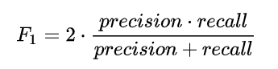
在需要平衡精确率和召回率的情况下使用，如信息检索、文本分类等。
3.4 pytorch中模型训练¶
PyTorch将模块（modules）作为深度学习模型的构建块，这使得神经网络的构建快速且直接，无需手动编码每个算法的繁琐工作。
在PyTorch中用于构建和优化深度学习模型的模块主要有：
-
数据处理：处理训练深度学习模型所需的大型数据集可能非常复杂，并且计算量巨大。PyTorch 提供了torch.utils.data.Dataset存储数据样本及其对应的标签和torch.utils.data.Dataloader包装了一个可迭代对象（可操作的对象），用于数据集，以便轻松访问样本
-
nn模块被用作神经网络的层。torch.nn包包含大量执行常见操作的模块库。例如，torch.nn.Linear(n,m)调用一个具有n个输入和m个输出的线性回归算法（其初始输入和参数在后续代码行中确定）。
-
autograd模块提供了一种简单的方法来自动计算梯度，用于通过梯度下降优化模型参数，适用于神经网络中运行的任何函数。在任何张量后附加requires_grad=True，即向autograd发出信号，表明应对该张量上的所有操作进行跟踪，从而实现自动微分。
-
Optim模块将这些梯度应用于优化算法。Torch.optim为各种优化方法（如随机梯度下降（SGD）或（adam））提供模块，以满足特定的优化需求。
3.4.1 数据处理¶
在训练模型之前，我们需要将数据组织成批次（batches），以便高效地进行训练。
使用 DataLoader 可以实现：
- 自动分批
- 数据打乱（shuffle）
- 并行加载数据
3.4.2 模型构建¶
构建PyTorch模型最常用、最灵活的方式。创建一个类，并定义两个核心方法：__init__ 和 forward。
__init__方法：用于**定义**模型中所有可学习的参数和层（如nn.Linear,nn.Conv2d）。forward方法：用于**定义**数据如何通过这些层进行前向传播。这是模型的核心逻辑。
3.4.3 优化器（Optimizer）¶
负责根据梯度更新模型参数。 常见优化器：
SGDAdam
3.4.4 损失函数（Loss Function）¶
用于衡量模型预测与真实标签之间的差距。
常见损失函数：CrossEntropyLoss
3.4.5 训练循环（Epoch 和 Batch）¶
一个 Epoch 表示模型遍历整个训练集一次。 每个 Epoch 中包含多个 Batch，即每次训练使用一小批数据。
for epoch in range(num_epochs):
for batch_idx, (data, target) in enumerate(train_loader):
# 训练步骤...
3.4.6 训练步骤¶
- 前向传播（
model(input)） 将输入数据传入模型，得到预测结果。 - 计算损失（
loss = loss_fn(output, target)） 比较预测结果与真实标签，计算损失值。 - 梯度清零（
zero_grad） 清除上一轮梯度，避免累积。 - 反向传播（
loss.backward()） 自动计算梯度。 - 更新参数（
optimizer.step()） 根据梯度调整模型参数。
3.4.7 模型验证¶
在每个 Epoch 结束后，使用验证集评估模型性能：
- 不进行梯度计算（
with torch.no_grad()） - 计算验证集上的损失或准确率
3.4.8 保存模型¶
训练完成后，保存模型参数以备后续使用：
torch.save(model.state_dict(), 'model.pth')
整体伪代码如下所示：
from torch.utils.data import Dataset, DataLoader
from torch import nn, optim
import torch
# 数据
# 包装特征和标签
dataset = Dataset()
# batch
dataloader = DataLoader(dataset=dataset, batch_size=4, shuffle=True)
# 模型
class model(nn.Module):
def __init__(self):
super(model, self).__init__()
pass
def forward(self, x):
out = x
return out
model = model()
# 优化器
optimizer = optim.Adam(model.parameters(), lr=0.001, betas=(0.9, 0.999))
# 损失实例化
loss = nn.CrossEntropyLoss()
# 遍历epoch
epochs = 100
for epoch in range(epochs):
# 遍历batch
for (x, y) in dataloader:
# 模型预测
y_pre = model(x)
# 计算损失
loss_value = loss(y_pre, y)
# 反向传播
optimizer.zero_grad()
loss_value.backward()
optimizer.step()
# 模型验证
with torch.no_grad():
# 验证集数据
y = model(x)
# 评估方式
# 准确率、损失、精确率、召回率、F1
# 模型保存
torch.save(model.state_dict(), 'model.pth')
4.拟合¶
在设计机器学习算法时不仅要求在训练集上误差小，而且希望在新样本上的泛化能力强。
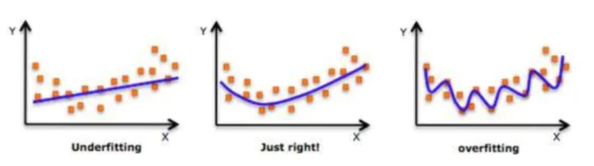
在机器学习中，模型拟合 是指模型从训练数据中学习规律的过程。根据学习效果，可以分为三种状态：
- 欠拟合 - 模型学习不足
- 正好拟合 - 模型学习恰到好处
- 过拟合 - 模型学习过度
4.1 欠拟合¶
模型无法捕捉训练数据中的基本模式和规律。
表现特征：
- 训练集上表现差（高训练误差）
- 验证集上表现同样差（高验证误差）
- 模型过于简单，无法理解数据复杂性
解决方法
- 增加模型复杂度： 添加更多层或增加每层的神经元数量
- 延长训练时间 ：增加epoch数量
4.2 正好拟合¶
模型很好地学习了数据的真实规律，具有良好的泛化能力。
表现特征：
- 训练集上表现良好（低训练误差）
- 验证集上表现同样良好（低验证误差）
- 训练误差与验证误差都很低且接近
4.3 过拟合¶
模型不仅学习了数据的真实规律，还学习了噪声和随机波动。
表现特征：
- 训练集上表现极好（极低训练误差）
- 验证集上表现差（高验证误差）
- 训练误差与验证误差差距很大
解决方法：
4.3.1. Dropout正则化¶
在训练深层练神经网络时，由于模型参数较多，在数据量不足的情况下，很容易过拟合。Dropout，中文是随机失活，是一个简单又机器有效的正则化方法。
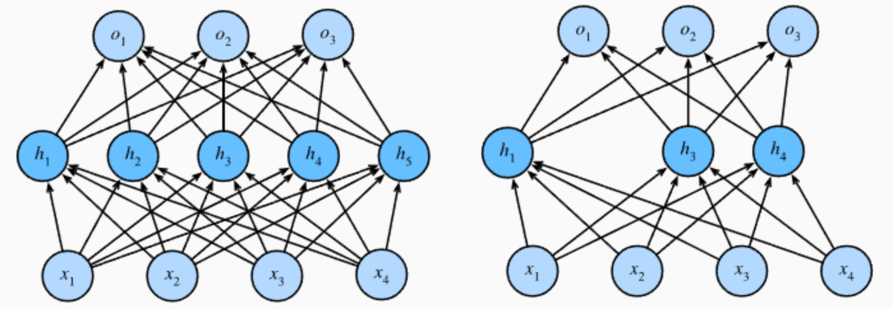
- 在训练过程中，Dropout的实现是让神经元以超参数p的概率停止工作或者激活被置为0,未被置为0的进行缩放，缩放比例为1/(1-p)。训练过程可以认为是对完整的神经网络的一些子集进行训练，每次基于输入数据只更新子网络的参数。
- 在测试过程中，随机失活不起作用，最后的输出结果要乘以P。
我们通过一段代码观察下dropout的效果：
import torch
import torch.nn as nn
def test():
# 初始化随机失活层
dropout = nn.Dropout(p=0.4)
# 初始化输入数据:表示某一层的weight信息
inputs = torch.randint(0, 10, size=[1, 4]).float()
layer = nn.Linear(4,5)
y = layer(inputs)
print("未失活FC层的输出结果：\n", y)
y = dropout(y)
print("失活后FC层的输出结果：\n", y)
if __name__ == '__main__':
test()
程序输出结果：
未失活FC层的输出结果：
tensor([[-0.8369, -5.5720, 0.2258, 3.4256, 2.1919]],
grad_fn=<AddmmBackward0>)
失活后FC层的输出结果：
tensor([[-1.3949, -9.2866, 0.3763, 0.0000, 3.6531]], grad_fn=<MulBackward0>)
上述代码将 Dropout 层的概率 p 设置为 0.4，此时经过 Dropout 层计算的张量中就出现了很多 0 , 未变为0的按照（1/(1-0.4)）进行处理。
4.3.2 规范化(Norm层)¶
在神经网络的训练过程中，流经网络的数据都是一个 batch，每个batch 之间的数据分布变化非常剧烈，这就使得网络参数频繁的进行大的调整以适应流经网络的不同分布的数据，给模型训练带来非常大的不稳定性，使得模型难以收敛。如果我们对每一个batch 的数据或某一层的数据进行标准化之后，数据分布就变得稳定，参数的梯度变化也变得稳定，有助于加快模型的收敛。

写成公式如下所示：
- λ 和 β 是可学习的参数，它相当于对标准化后的值做了一个线性变换，λ 为系数，β 为偏置；
- eps 通常指为 1e-5，避免分母为 0；
- E(x) 表示变量的均值；
- Var(x) 表示变量的方差；
5.模型预测¶
使用训练好的模型对新数据进行预测的过程。核心目标是将训练阶段学到的模式应用于未知数据，实现模型的实用价值。
预测的主要流程：
1.数据或文本预处理
清洗和标准化原始数据
2.Tokenization与词嵌入（NLP）
将文本转换为模型可理解的数值特征
3.模型推理
使用训练好的模型进行预测
4.后处理
将模型输出转换为可读的最终结果
6.总结¶
一.数据准备
1. 数据组成：包括特征（输入）、标签/目标值（输出）和样本（完整记录）。
2. 数据划分：
- 训练集（60-80%）：用于模型学习。
- 验证集（10-20%）：用于调参和模型选择。
- 测试集（10-20%）：用于最终性能评估。
3. 数据表示：使用PyTorch张量（多维数组）表示数据，支持GPU加速。
4. 文本预处理：
- 分词：将文本切分为词或子词单元。
- 构建词表：建立词语到ID的映射。
5. 词向量化：
- One-Hot编码（高维稀疏）。
- 词嵌入（如
nn.Embedding，低维稠密，可捕捉语义）。
二、模型选择
1.什么是神经网络：
- 模仿生物神经元，由输入层、隐藏层和输出层组成。
2. 激活函数：
- 作用：引入非线性，增强模型拟合能力。
- ReLU：最常用，缓解梯度消失。
- Sigmoid：用于二分类输出层。
- Softmax：用于多分类输出层。
- GELU：Transformer常用，平滑且梯度非零。
3. 模型搭建：
- 使用
nn.Module定义网络结构，包含__init__（定义层）和forward（定义前向传播）。
三、模型训练
1. 损失函数：
- 交叉熵损失：用于多分类（配合Softmax）。
- 二分类交叉熵：用于二分类（配合Sigmoid）。
2. 优化器：
- 梯度下降：通过梯度反向传播更新参数。
- Adam：结合动量与自适应学习率，常用且高效。
3. 训练流程：
- 循环多个Epoch，每个Epoch分批（Batch）处理数据。
- 步骤： 前向传播 → 计算损失 → 梯度清零 →反向传播 → 更新参数。
4. 评估指标：
- 准确率、精确率、召回率、F1分数等，用于分类任务性能评估。
四、拟合状态
1. 欠拟合：
- 表现：训练集和验证集误差均高。
- 解决：增加模型复杂度、延长训练时间。
2. 过拟合：
- 表现：训练集误差低，验证集误差高。
- 解决：
- Dropout：随机失活部分神经元，增强泛化。
- Normalization：规范化层输入，稳定训练过程。
3. 正好拟合：
- 训练集与验证集误差均低且接近，模型泛化能力强。
五、模型预测
将训练好的模型应用于新数据，完成相应的任务